| Quest Name | What to do |
| Goblin Lord | Search N-1 for a key, they drop off Goblins.  Head to the south east area till you find the locked lair door, use the key you just found to open it. Go inside and kill the goblin lord, search his corpse for a purple gem and a key. 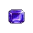 Use the key to open the other door and show the gem to Pelagus as proof. (Pel, Proof)  You will get a ring from Pelagus, take the ring and gem to Gennetta who is somewhere in n-1, once you find her, tell her Pelagus (Gen, Pelagis) and she will give you an amulet. Bring the ring and amulet to Hector in nork, drop them on his hex, and tell him heirloom. (Hec, Heirloom) |
| Lizard King | Search the town of Nork for SirHaldan, he rarely falls into n-4 and has been seen as far as the climb down spot in vt. Once you find him, ask him of his oath (Sir, Oath) He will tell you to go talk to Annalie. Annalie is randomly standing somewhere in Nork town, when you find her, tell her wards. (Ann, Wards) She will tell you a phrase, repeat the phrase to her (Ann, CALIN DAE VORDALLA!) Head to N-2 and slay the lizard king. |
| Mummy King + Prot stun amulet |
Search n-3 for a key. Once you find the key head to the north east area of n-3 till you find a set of double doors. Use the key to open the locked set of double doors, go inside and kill the mummy king, once dead bring his corpse to the nork tanner and tan the corpse.  Bring the mummy cloak to the west end of nork behind the fighter trainer, look for Wartberg. Once you find Wartberg, drop the cloak and 2k on his hex and click on him to obtain the prot stun amulet |
| Silver bow 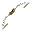 |
Locate one of two griffon lairs in nork, enter the lair and slay the griffon. Carry his corpse to the nearest tanner, tan his corpse (npc name, tan)  Pick up newly tanned robe and bring it to "Eventine" and trade it for his silver bow. |
Rat burrow sash |
Find and kill a rat located around the rat burrow town, take the corpse to Mungo drop it on his hex and tell him rat. (Mungo, rat) Locate the mayor (Dagano) in rat burrow, tell him mission. (Dagano, mission) He will tell you to locate a few items, An egg of the icedrake, Egg of the webweaver, Axe of the bull, Axe of the heathen. 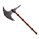 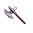  Search the Southwest area of nork -3.5 till you find a Sanquin, kill them until you find an egg after searching their corpse. Searth the Northeast area of nork -3.5 until you find an area with spiderwebs, Locate the Spider queen and kill her, search her corpse and take the egg. Search the Southwest corner area of nork -3.5 until you find a Dark guard, slay a dark guard and search his corpse, pickup his axe. Search the Northeast area of nork -3.5 for the Mino who wanders around, (may be difficult to locate him, perhaps have a friend assist you) once located slay him, search his corpse and pickup his axe. Go back to rat burrow town and visit the mayor, Dagano. Drop all 4 items you have collected onto his hex, then tell him Axe of the heathen, Axe of the bull, Egg of the webweaver, Egg of the icedrake. (Dagano, Axe of the heathen) (Dagano, Axe of the bull) (Dagano, Egg of the icedrake) (Dagano, Egg of the webweaver) He will then give you the rat burrow sash, which allows travel to Aleria. |
| N-5 Fumble grenade |
Kill and search n-5 until you loot a uncut emerald gem Bring the gem to TODO in the n-5 secret area to trade for the grenade |
| N-5 Red dragon entrance |
Kill and search n-5 until you loot a fire prot amulet,  Equip the amulet and step on the center hex in the fire room 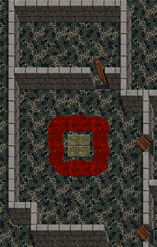 |
Roc lair key |
Search n-5 haunted area until you loot an ivory arrow, 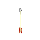 bring the arrow to Clemant to trade for the key. |
| Poison bow (Lvl 15 req.) 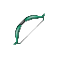 |
Head to the south area of n-5 secret area until you find a locked door, unlock the door with the key. Go inside and slay the Roc, search the corpse and take his egg. Bring the egg to Fordyniner who is located inside the N-5 haunt area, he who holds the poison bow, click him while holding the egg in your right hand, he will then give you the poison bow. |
| Entry to Nork-8 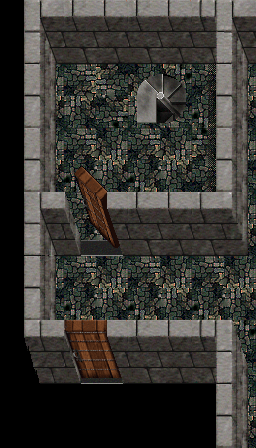 |
Slay Slicer on n-7 and loot his weapon (either a longsword or greatsword) While holding the weapon in either hand, step on the tile to open the door to n-8 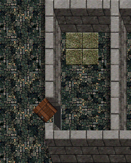 |
| Dancers (Lvl 15 req.)  |
Search the nork-5 secret area, slay crits until you find a key, this key will unlock the door to the dancer trader (sometimes it's already unlocked) On Nork-7 you can find bolts, kill/loot until you find a bolt. 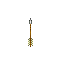 Take a bolt to the npc in the locked room, hold the bolt in your right hand and click the npc then click the talk button, he will give you a pair of dancers. |
| Full plate (Lvl 15 req.)  |
Head southwest from the west gate of frore, there is an opening that leads you to the Leviathan lair. Slay the Levi with your party, search his corpse and take his egg. Locate Malcome holding a full plate just east of frore inside a small building, hold the egg in your hand and click him, He will give you a full plate. |
| Double ninja lair entrance | Search for and kill a named ninja roaming around m-4 to find a pulsating purple gem. With the pulsating puruple gem, enter the golems lair, kill golem to obtain ceramic scales (somewhat rare drop) and a trapped gem. 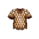 With the trapped gem, enter the Tengu's lair, kill the tengu for a super enmiss robe (Somewhat uncommon drop) and a pulsating purple gem.  Get into the stunner lair and kill her for a lightning tanto 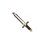 Get into the single ninja lair and kill it for the 3/0 blue sash  After obtaining all 4 items (Ceramic scales, Ser, Tanto, Blue sash) use them on the teleporter to enter the double ninja lair. |
| Chipper's Lair key | Inside frore, locate Billy. talk to billy to get a stick. 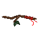 Head to the east area and find a clearing, look around for the moose, once you see him, hold the stick in hand and lure him back to billy, bill will then give you the key. |
| Uther lair entrance | Head over to homlet, kill Thrashers, Rockmen, Elementals until you find an Earth crystal. Head over to the Ice flows and kill Yeti's to get an Air crystal. 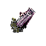 Head over to the fire plains and kill until you find a Fire crystal.  Head over to the water plains and kill until you find a Water crystal. Once you have all 4 crystals, head to frore 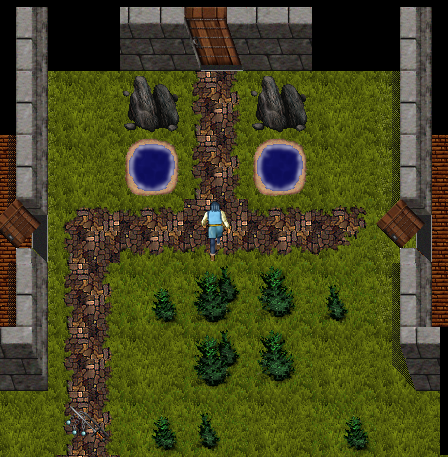 Hold each crystal one at a time in your right hand to progress. First hold the Water crystal Then the Earth crystal Then the Fire crystal Then the Air crystal After the Air crystal you will be sent to Uthers lair. Note: The crystals eventually break. |
| Betty Quest | Locate Art in the west of frore inside a building, click his name, then click talk button. he will give you a doll. 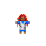 Locate betty to the west of frore on an island with skeletons and harpies, she will be located behind walls and is very weak, lure her back to her father while keeping her alive Once you are back to her father and she is alive and well, tell her father betty (Art, betty) You will be rewarded with some random pots, a zap, 2 lair diamonds worth 20k each and an atonement up to good/good aligned. |
| Baskie shield 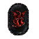 |
Get enchanted to enter lair by going to volcano town, head downstairs to the northwest corner, locate Kuron. tell kuron, secret (Kur, secret) she will ask for a freshly slain corpse of a creature, go slay the creature she asks for and return the corpse to her, tell her again secret (Kur, secret) You are now enchanted to enter the basilisk lair. jump or climb down the south area of volcano town and head east till the entrance. (If you enter and leave before killing the baskie, you will need to get enchanted again) Slay the basilisk with a party, pickup the corpse and return to volcano town's tanner, tan the corpse, pickup the scales and trade them in volcano towns basement to Bavic, his will give you the shield. |
Thief Seahag Armor Paladin Seahag Armor |
Kill the seahag and loot her corpse for a robe. Visit Kaldorff in Frore to trade for the armor, a level 19 thief to trade for the thief armor, a level 20 paladin to trade for the paladin armor Type Kal, Robe to perform the trade |
| Lightning hammer |
Head to maeling-3, search and kill ninja's until you kill one wearing a Black ninja robe (Bnr).  Head back to maeling, locate the npc in the center of town who welds a lightning hammer, he will trade his hammer for your Bnr, hold the bnr in your hand, click him. |
Muzi (mini-uzi) amulet |
Collect two silver bows from the Volcano town fishery, Collect a pearl from the nork-3.5 ghost (pearl will have door charges),  find a flawless back pearl from maeling-3, take it to an npc in maeling-2 and trade it for a key.  With the two bows, door pearl and key in your possession, head to Kingmino dungeons-2 (Km-2) where you will locate an npc named Peewee in the southwest area (ussually people ask for a massteleport to get there) Once you have arrived at Peewee, hold the pearl in your hand, click on peewee and click the talk button 5 times, put the pearl back in your sack. Drop 1 silver now and say peewee trade (PeeWee, trade) drop the second silver bow and again say peewee trade. he will then give you a Muzi amulet. |
| Thief Crossbow 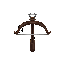 |
Bring a bolt and a silver bow to Skinny on km-5 Bolts drop on km-5 SIlver bow drops from archers rarely on km-5 Note: Thief only to trade |
| Naga lair entrance | Locate a statue by killing crits on the lower level of prisons (area east of nork in the building)  Once you find a statue, move to the bottom level of the prison, then head to the Northwest and take the stairs going up. Go Southwest along the water holding the statue in hand, you will locate the Naga lair. |
| Silver dragon lair entrance | Head to Nork-6 and search for a neutral npc named Jerediak, Once located assist him in slaying hostle crits around him, once he is safe, say hello to him (Jerediak, hello) He will tell you to go report to Talbot with the name of the traitor. Locate talbot in nork, tell him the name of the traitor. (Talbot, traitor is TRAITORSNAME) Note: Sometimes Talbot falls into the hole leading to n-4 You are now enchanted to enter the silver dragons lair. Head east of volcano town till you see a patch of grass along the walls, climb up that spot to enter the lair. |
| +4 Halberd 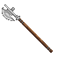 |
Obtain a minotaur axe by killing one of two minotaur lairs in nork. Once you have an axe, go to the prisons east of nork, head to the bottom floor and look for an npc holding a hally, click him and click talk button to receive the hally. Note: Does not tie, can only be repaired by the person who got it from the quest. |
| +5 Halberd |
Head southwest from frore till you find a set of stairs, climb up the stairs to enter the Halberd giants lair, slay the giant and take his halberd. |
| +6 Halberd |
Head to the fireplains (through hole in portal room in Evil-nork) Head south from there and you will find a huge room through a set of double doors, there are two chambers inside this room, the east room contains the Fire giant, slay him and take his Halberd. |
| Strength Halberd 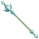 |
Head to the kingmino dungeons-5 (Km-5) slay Minotaurs until you obtain a 6Oz root and a skin sack of mino blood. Locate the str halberd trader in Km-5 and trade both the root and blood for the halberd. |
| Excalibur 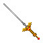 |
Defeat a Warden on n-10 and take their heart. Step on the center tile located between both warden lairs to open the passage to the trader. Note: Only a paladin can trade for the excalibur |
Uzi Amulet |
Travel to the lich lairs located near the frore. Leave the south gate of frore and travel southeast until you find two buildings, one has a huge hole in it. jump down the Northeast part of the hole, your now in a cave with a wall, use door or a grenade to enter the building. Move Southwest in the building till you locate the first Lich lair, Kill him and take his Amulet. Holding his amulet in hand, step on the center hex in his lair to teleport to the second lich lair. Slay the second lich and loot his amulet, again holding it, step onto the middle hex. Continue to slay the liches until you enter the larger room which contains the Papa lich, slay him and search his corpse for the amulet (uzi) Alternately, an uzi which does not tie can be obtained from searching Chipper's corpse. |
| Club house entrance | Obtain a Chipper staff, Sabre, Stilletto. 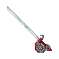 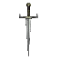 Obtain the key to open the club house by killing snowbeast and taking his skull then trading the skull with the king of frore for the key.  Note: The skull is considered a helm Open the door to the club house located in the ice floes Northeast of frore Speak to Awlo, he requires a chipper staff to trade for his Power helm.  While holding the power helm in hand head to Lasezi, trade a stiletto for the power robe. 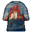 While holding the power helm and power robe in hand head to Tiktnam Trade a sabre with him to be able to enter the club house. |
| Club house Bero/Durgon hp maxing |
Kill Berovar and Durgon, loot the greatsword from Berovar and the amulet from Durgon 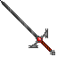 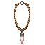 For HP; Visit Tillicus in the club house and trade the bero greatsword for a cup, 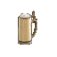 Bring the cup to the water pools west of durgons lair Stand in the SOUTH pool and type 'Drink' while holding the cup in your hand to gain +1 Hp For EP; Visit Tillicus in the club house and trade both the durgon amulet for a cup, Bring the cup to the water pools west of durgons lair Stand in the NORTH pool and type 'Drink' while holding the cup in your handto gain +1 Ep Note: Can be repeated until the max hp/ep values are reached Visit https://victumterra.com/Roar/HpEpMaxes.html to see the max hp/ep per class |
Following quests were added later and used to only be available in alt 2 Now can be done in alt 1 as well! |
|
| Improved rat burrow sash |
Bring a ratburrow sash to Devew located on the west end nork town, he asks for a spider egg. Head to spiderqueen in n3.5 and kill her for her egg, bring the egg to Devew to improve the sash. Regular: 2/2 Improved: 3/3 |
| Improved Yeti (Small) 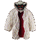 |
Bring a yeti armor to Oivoi and he will improve its cold resistance. |
| Improved Yeti (Large) |
Bring a yeti armor to Oivoi and he will improve its combat adds (+2) (Thanks Ken) |
| Returning Hammer 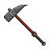 |
Bring Luth in the sf a succor scroll, prot stun scroll, respirate scroll, and an axe of a dark guard and he will give you the hammer. |
| Improved silver dagger 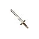 |
Bring a silver dagger from the east shop in the sf to the gem encrust npc, encrust the dagger with a flawless emerald, go see Mythe in nork town smithy to get the dagger improved. |
| Small Coins 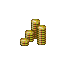 |
Nolid in nork Inn, needs help finding a room to rest in. Tell him to visit the steelflower. Nolid, steelflower. He then hands you 1500 coins |
| Improved Poison bow |
Bring a poison bow and a poison vial to Ptath on the east end of nork town. he will then improve the level of poison on the bow. |
25 hp amulet |
Canub asks for a silver longbow and sanquin egg, Bring these to him to receive a +25 hp amulet. |
| Improved Bisento 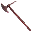 |
Bring a bisento from an orge lord and Balaba in Maeling will Improve it. |
| Improved Lightning hammer (Lvl 9 lightning) |
Bring a lightning hammer and a corpse of a kinzo and 25k coins to Mingor in the south of Maeling to improve the lightning on the hammer. |
| Improved Yellow robe 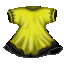 |
Bring Dulain a lair diamond as well as a yellow robe and he will improve its combat protection. Regular: 50/50 fire/ice prot Improved: 50/50 fire/ice prot, 1/1 combat adds |
| Good aligned mino axe 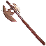 |
Bring Lotu who is west of maeling a mino axe and he will make it good aligned. |
| Improved Bnr |
Bring a black ninja robe, 10k coins as well as a piece of fine jade to Bakoru east of maeling behind steps to Maeling-1, and he will improve the +agility adds. |
| Acid prot robe |
Basae asks for a Mudsettler corpse, bring him one to get mummy cloak with protection against acid. Note: The robe can be used to trade for a prot stun amulet the same way the mummy king robe can |
| Improved black dragon scales (Not actual image) |
Bring kekig in the west of volcano town a black dragon scales and silver dragon scales and he will add lightning prot to the black scales. Regular black scales: 100/100/100 Fire/Ice/acid prot Improved: 100/100/100/100 Fire/Ice/acid/lightning prot |
| Glittering Shortsword 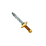 |
Bring a set of naga scales, a mino axe to Nanat in volcano town for the shortsword. |
Zaps |
Zelcia asks for the corpse of a slain griffy. You'll also rarely get a major as well (Thanks Ken) |
| Improved baskie shield 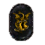 (Not actual image) |
Bring two baskie shields and 50k coins to Borvaca in volcano town basement |
Succor ring |
Head to Sonth in volcano town, bring Sonth a gold plated ring as well as a silver bow to trade for a succor ring. |
| Improved Griffy sword 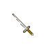 |
Fanel in the volcano town basement asks for a silver longsword, bring a few coins and a sword to him to have it improved. |
| Improved Katsumo Gauntlets 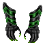 (Not actual image) |
Olarth located inside wall on north side of Maeling town asks for 50000 coins to improve them. |
| Improved red dragon gauntlets 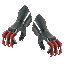 (Not actual image) |
Head to Karoth located in volcano town, bring your red dragon gauntlets and 5000 coins to get the gauntlets improved. |
| Goblet quest | Locate all 16 goblets and bring them to Harkob in the sf to put their enchantments into a piece of gear. Each goblet will add 1 base AC to an armor There is a special #30 goblet that comes from Uber lairs Goblet #0 is from the prisons Naga Goblet #1 is from Nork-5 Red dragon Goblet #2 is from Nork dungeons, common on N-10 Goblet #3 is from Hally giant of frore Goblet #4 is from volcano town Silver dragon Goblet #5 is from Volcano town Black dragon Goblet #6 is from the minotaur in the prisons mino maze Goblet #7 is from Chipuda Goblet #8 is from Papa lich Goblet #9 is from Uther Goblet #10 is from Snowbeast Goblet #11 is from Slicer Goblet #12 is from Firegiant Goblet #13 is from Mama red dragon Goblet #14 is from Slith Goblet #15 is from Reggie |
| Thanks to Bartosh for info on upgraded katsuno gaunts and quest. Thanks to Skaar for info on ch bero/durgon maxing |
|